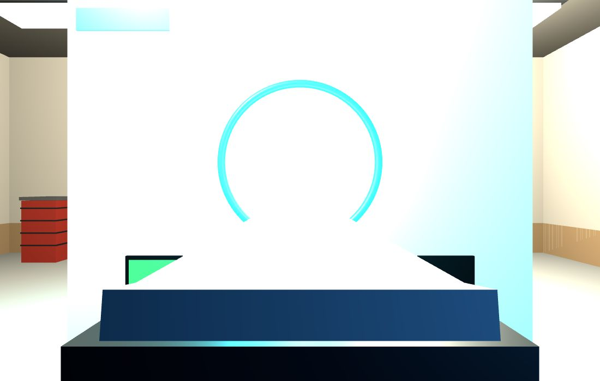

The clinic
One door off the main street: an imaging suite whose centerpiece is a faithful replica of a clinical whole-body PET/CT — ported, dimension by dimension, from its own design project.
The scanner follows the sibling PET/CT engineering study: Ø700 mm bore, 16-row CT up front, a static PET ring of 592 crystals × 64 rings in 37 modules behind it, and a two-stage table that reaches through both — whole-body protocol ~24 minutes. The replica keeps the design language too: gloss-white gantry, the cyan flare ring, orange PET modules visible down the bore, gold slip rings aft.
Around it, the room is built the way radiology actually works: a lead-partition control booth with a leaded-glass window and a three-screen console; an FDG pass-through hatch in the hot-lab wall with an amber dose window; crash cart, IV stand, wall-mounted reading display. Print-regolith skirting ties the white room back to the city that carved it.

